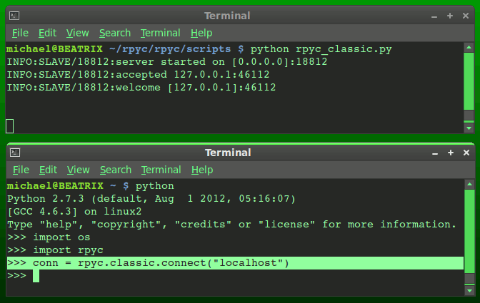

How are remote procedures/functions called without resorting to socket programming to move data around the network? The answer is to use an API that mediates things for the main program and the remote procedures/functions, so the programmer calls a remote function in almost the same way as one that exists locally. This is essentially what RPC is about. Again, there should be little difference, from the programmer’s perspective, whether the function exists locally or elsewhere.
There are several RPC modules/libraries available for Python, but I chose RPyC in particular because it’s well maintained and excellently documented, and with some good tutorials on the developers’ site.
A default server script is included with the RPyC download (/rpyc/scripts/rpyc_classic.py), and this listens on port 18812 for an RPC call. It must be run first, otherwise there’s a ‘connection refused’ error when running a client script.
In the following example, both the client and server are running on the same machine. Remember that a server, by definition, is simply a process listening on a network port, regardless of which system it’s running on. Here the client script sends an RPC to the local network interface, and the call is looped back to the port on which the server is listening.

Notice that each time the client makes a call, its own port number might change. This is important, because it’s one way of differentiating between multiple calls from the same client, and the client might initiate new TCP sessions with each call.
The next client script demonstrates something a little more practical – two way communication between two physical machines, over RPC. For this to work, RPyC must be installed on both ends, and the rpyc_classic.py script must be running on one to provide the server.
import os
import rpyc
#Establish connection with RPC server
conn = rpyc.classic.connect("192.168.1.2")
#Print remote working directory
print("Remote working directory: ")
currentDir = conn.modules.os.getcwd()
print(currentDir)
print " "
#Send message to RPC server
conn.modules.sys.stdout.write("This is a message from the RPC client.\n")
#Retreive list of installed modules on server
print("Installed modules: ")
for i in conn.modules.sys.path:
print i
Notice there’s very little socket programming in the script itself. But isn’t RPC about calling functions on a remote system? Well, the client did that indirectly, using the RPyC API to mediate between the script and functions on the remote system. Notice that the RPyC module called stdout() on the remote system to print the highlighted message on the server, passing the parameter through the RPC layer.
IDL and C
While the Python examples can show RPC in action, others have done most the hard work, and later on the programmer might want to define his/her own services.
To implement the Python examples in the C language and Sun RPC, some of the API code must be created manually using the Interface Definition Language (IDL) and a special compiler called
rpcgen. This generates a set of files that handle the RPC stuff for us. Borrowing an example from
Cprogramming.com, I copied a small IDL file (
rpc-example.x) into a text editor and compiled it with
rpcgen:
$rpcgen rpc-example.x
The following were generated:
- rpc-example.h: A header file to include in a C program.
- rpc-example_svc.c: Server ‘stub’.
- rpc-example_clnt.c: Client ‘stub’.
- rpc-example_xdr.c: Ensures data is encoded in a common format between client and server.
The
rpc-example.h file is analogous to the Python module created in my last post, being a header file included in a program, and a file that defines services. In turn,
rpc-example.h calls header files for socket programming, networking, memory management, native RPC objects and a couple other things. I haven’t figured out which functions belong to which libraries yet, so there might be another post on this.
The ‘server stub’ creates a socket (essentially a temporary file in a UNIX system) with an arbitrary port number and uses the operating system’s native RPC library to register a service with that port number and process ID. Now there is a server listening on the port for incoming connections.
The ‘client stub’ contacts the other machine’s network interface to determine the RPC server’s port, and communicates with the ‘server stub’ on behalf of the program intiating the function call.
Since there’s communication between two machines, possible with different operating systems and architectures, establishing a common encoding method between the client and server is also a good idea. This is what
rpc-example_xdr.c handles.